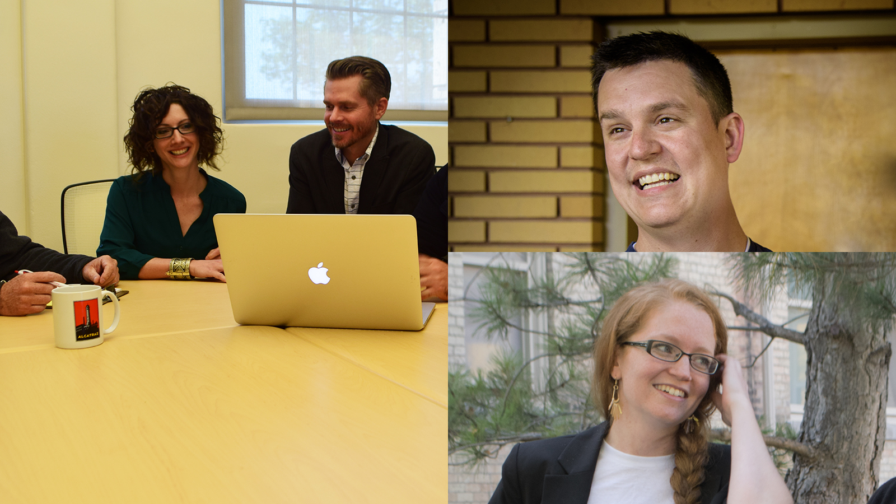

<main class="bg-white" style="padding-bottom:0;">

  <div class="tc-carousel-wrapper">

    <div class="container-variable">

      <div class="row">

        <div class="tc-carousel col-xs-12">

              <div>
            

            <div class="tc-carousel-caption">
              <h2>Study Abroad in Morocco</h2>
              <p>May 2017: Engage in community-based research with a women's cooperative to study the goals and strategies that facilitate the work of successful civil society organizations.</p>
              <a class="btn btn-gray btn-responsive" href="mailto:rebecca.walton@usu.edu" role="button" target="_blank">Email Dr. Walton for more information</a>
            </div>       
          </div>

          <div>

            

            <div class="tc-carousel-caption">
              <h2>Welcome, Avery Edenfield</h2>
              <p>Dr. Edenfield researches workplace participation, rhetorics of empowerment and democracy, and community engagement</p>
              <a class="btn btn-gray btn-responsive" href="{{ "/people/faculty" | prepend: site.baseurl }}" role="button">Meet the Faculty</a>
            </div>

          </div>

        

          <div>

            

            <div class="tc-carousel-caption">
              <h2>New Publications</h2>
              <p>Congratulations to Beth Shirley and Jared Colton on their new article in <strong><a href="http://www.presenttensejournal.org/volume-6/the-moral-act-of-attributing-agency-to-nonhumans/" font color="#d3d3d3">Present Tense</a></strong> and to Chris Dayley and Rebecca Walton on their forthcoming article in <strong>Programmatic Perspectives</strong>!</p>
              <a class="btn btn-gray btn-responsive" href="{{ "/people/students" | prepend: site.baseurl }}" role="button">Get to Know Our Students</a>
            </div>
          </div>

          <div>

            

            <div class="tc-carousel-caption">
              <h2>Gaming for&nbsp;Good</h2>
              <p>Take courses in gaming, ethics, disability studies, rhetoric, social justice, and other topics.</p>
              <a class="btn btn-blue btn-responsive" href="{{ "/bachelors/courses" | prepend: site.baseurl }}" role="button">Check out our topics courses</a>
            </div>

          </div>

        </div>

      </div>

    </div>

  </div>

</main>
